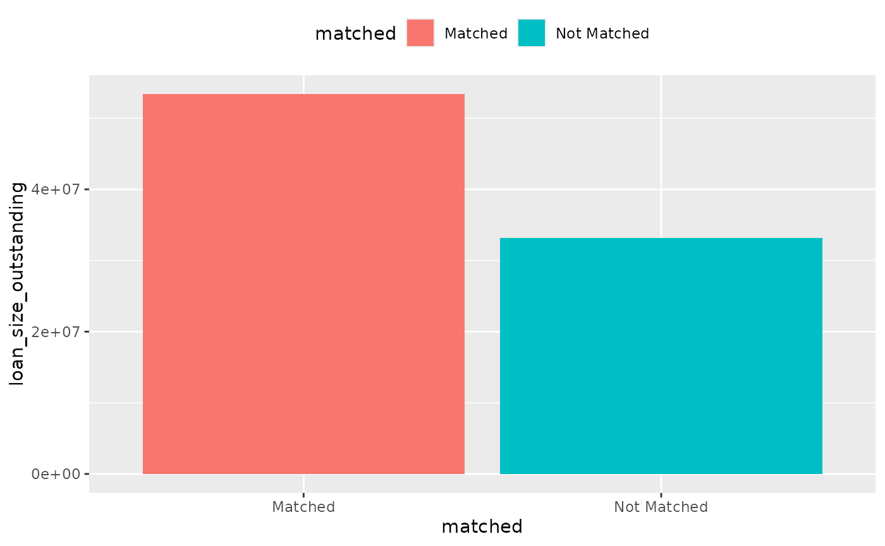
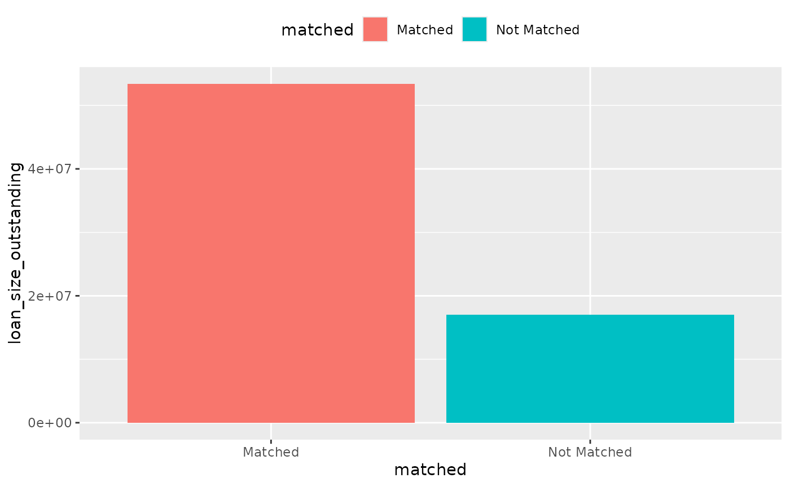
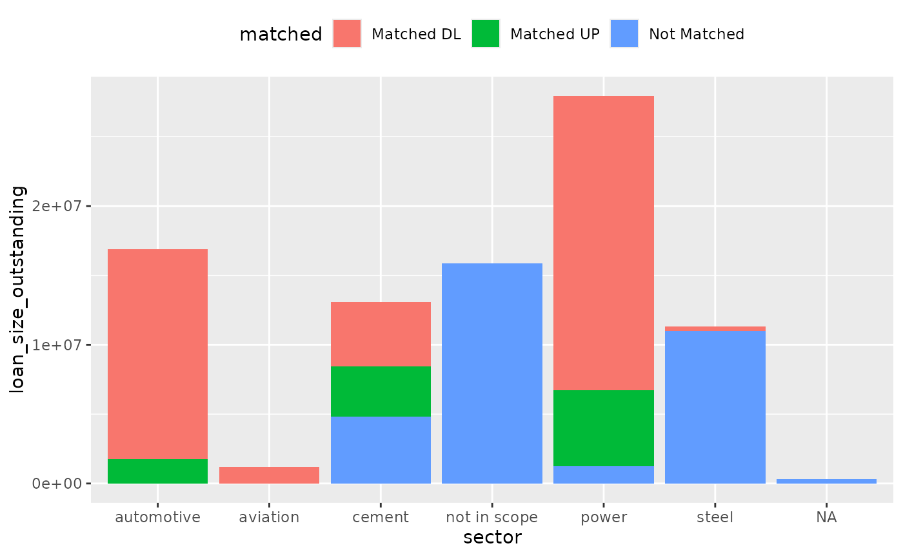
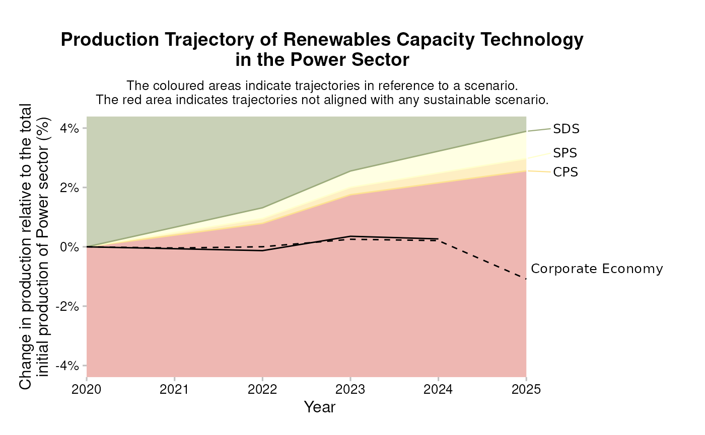

Calculating Matching Coverage
r2dii.match allows you to match loans from your loanbook to the companies in an asset-based company dataset. However, matching every loan is unlikely – some loan-taking companies may be missing from the asset-based company dataset, or they may not operate in the sectors PACTA focuses on (power, cement, oil and gas, aviation, coal, automotive, steel, and hdv). Thus, you may want to measure how much of the loanbook matched some asset. This article shows two ways to calculate such matching coverage:
Calculate the portion of your loanbook covered, by dollar value (i.e. using one of the
loan_size_*columns).Count the number of companies matched.
Setup
First we will need to load additional useful packages purrr and ggplot2:
We will use the example datasets created in the previous section. To
demonstrate our point, we create a loanbook dataset with
two mismatching loans:
loanbook <- loanbook %>%
mutate(
name_ultimate_parent =
ifelse(id_loan == "L1", "unmatched company name", name_ultimate_parent),
sector_classification_direct_loantaker =
ifelse(id_loan == "L2", "99", sector_classification_direct_loantaker)
)We will then run the matching algorithm on this loanbook:
matched <- loanbook %>%
match_name(abcd) %>%
prioritize()
#> Warning: Some `sector_classification_direct_loantaker` are unknown:99
#> ℹ If you wish to request a new sector classification system, please create an issue here:
#> • https://github.com/RMI-PACTA/r2dii.data/issues
#> ℹ Or contact the PACTA team here:
#> • pacta4banks@rmi.orgNote that this matched dataset will contain
only loans that were matched successfully. To determine
coverage, we need to go back to the original loanbook
dataset. We must determine the PACTA sectors of each loan, as dictated
by the sector_classification_direct_loantaker column.
For this, we join the loanbook with the
r2dii.data::sector_classifications dataset, which lists all
sector classification code standards used by ‘PACTA’. Unfortunately we
need to work around two caveats (you may ignore them because they are
conceptually uninteresting):
In the two datasets, the columns we want to merge by have different names. We use the argument
bytodplyr::left_join()to merge the columnssector_classification_systemandsector_classification_direct_loantaker(fromloanbook) with the columnscode_systemandcode(fromr2dii.data::sector_classifications), respectively.In the two datasets, the sector classification codes are represented with different data-types. We modify the column
sector_classification_direct_loantakerbeforedplyr::left_join()so it has the same type as the corresponding columncode(otherwisedplyr::left_join()throws an error), and again afterdplyr::left_join()to restore its original type.
merge_by <- c("code_system", "code") %>%
rlang::set_names(paste0("sector_classification_", c("system", "direct_loantaker")))
loanbook_with_sectors <- loanbook %>%
left_join(r2dii.data::sector_classifications, by = merge_by) %>%
modify_at(names(merge_by)[[2]], as.character)We can join these two datasets together, to generate our
coverage dataset:
coverage <- left_join(loanbook_with_sectors, matched) %>%
mutate(
loan_size_outstanding = as.numeric(loan_size_outstanding),
loan_size_credit_limit = as.numeric(loan_size_credit_limit),
matched = case_when(
score == 1 ~ "Matched",
is.na(score) ~ "Not Matched",
TRUE ~ "Not Matched"
),
sector = case_when(
borderline == TRUE & matched == "Not Matched" ~ "not in scope",
TRUE ~ sector
)
)
#> Joining with `by = join_by(id_loan, id_direct_loantaker, name_direct_loantaker,
#> id_ultimate_parent, name_ultimate_parent, loan_size_outstanding,
#> loan_size_outstanding_currency, loan_size_credit_limit,
#> loan_size_credit_limit_currency, sector_classification_system,
#> sector_classification_direct_loantaker, lei_direct_loantaker,
#> isin_direct_loantaker, sector, borderline)`1. Calculate the portion of your loanbook covered by dollar value
From the coverage dataset, we can calculate the total
loanbook coverage by dollar value. Let’s create two helper functions,
one to calculate dollar-value and another one to plot coverage in
general.
dollar_value <- function(data, ...) {
data %>%
summarize(loan_size_outstanding = sum(loan_size_outstanding), .by = c(matched, ...))
}
plot_coverage <- function(data, x, y) {
ggplot(data) +
geom_col(aes({{x}}, {{y}}, fill = matched)) +
# Use more horizontal space -- avoids overlap on x axis text
theme(legend.position = "top")
}Let’s first explore all loans.

To calculate the total, in-scope, loanbook coverage:
coverage %>%
filter(sector != "not in scope") %>%
dollar_value() %>%
plot_coverage(matched, loan_size_outstanding)
Break down by sector
You may break-down the plot by sector:

Or even further, by matching level:
coverage %>%
mutate(matched = case_when(
matched == "Matched" & level == "direct_loantaker" ~ "Matched DL",
matched == "Matched" & level == "intermediate_parent_1" ~ "Matched IP1",
matched == "Matched" & level == "ultimate_parent" ~ "Matched UP",
matched == "Not Matched" ~ "Not Matched",
TRUE ~ "Catch unknown"
)) %>%
dollar_value(sector) %>%
plot_coverage(sector, loan_size_outstanding)
2. Count the number of companies
You might also be interested in knowing how many companies in your
loanbook were matched. It probably makes most sense to do this at the
direct_loantaker level:
companies_matched <- coverage %>%
summarize(no_companies = n_distinct(name_direct_loantaker), .by = c(sector, matched))
companies_matched %>%
plot_coverage(sector, no_companies)
Visualization
There are a large variety of possible visualizations stemming from
the outputs of r2dii.analysis::target_market_share() and
r2dii.analysis::target_sda(). Below, we highlight a couple
of common plots that can easily be created using the
r2dii.plot package.
Market Share: Sector-level technology mix
From the market share output, you can plot the portfolio’s exposure
to various climate sensitive technologies (projected), and
compare with the corporate economy, or against various scenario
targets.
# Pick the targets you want to plot.
data <- filter(
market_share_targets_portfolio,
scenario_source == "demo_2020",
sector == "power",
region == "global",
metric %in% c("projected", "corporate_economy", "target_sds")
)
# Plot the technology mix
qplot_techmix(data)
#> The `technology_share` values are plotted for extreme years.
#> Do you want to plot different years? E.g. filter . with:`subset(., year %in% c(2020, 2030))`.
#> Warning: Removed 3 rows containing missing values or values outside the scale range
#> (`geom_bar()`).
Market Share: Technology-level volume trajectory
You can also plot the technology-specific volume trend. All starting values are normalized to 1, to emphasize that we are comparing the rates of buildout and/or retirement.
data <- filter(
market_share_targets_portfolio,
sector == "power",
technology == "renewablescap",
region == "global",
scenario_source == "demo_2020"
)
qplot_trajectory(data)
SDA Target
From the SDA output, we can compare the projected average emission intensity attributed to the portfolio, with the actual emission intensity scenario, and the scenario compliant SDA pathway that the portfolio must follow to achieve the scenario ambition by 2050.
data <- filter(sda_targets, sector == "cement", region == "global")
qplot_emission_intensity(data)
PREVIOUS CHAPTER: Running the Analysis
NEXT CHAPTER: Advanced Use Cases